01
What is Formula 1 actually?
Formula 1, also known as F1, is the premier category of international single-seater open-wheel racing, overseen by the Fédération Internationale de l'Automobile (FIA). It has been in operation since its first race at the 1950 British Grand Prix.
The term "formula" refers to the set of guidelines all participants' vehicles must adhere to. A Formula One season comprises multiple races known as Grands Prix, which are held across various countries and continents on dedicated tracks or closed public roads.
Formula One cars are the fastest regulated road-course racing vehicles globally, achieving high cornering speeds through significant aerodynamic downforce. The cars evolve annually under specific regulations, producing some of the most iconic racing machines.
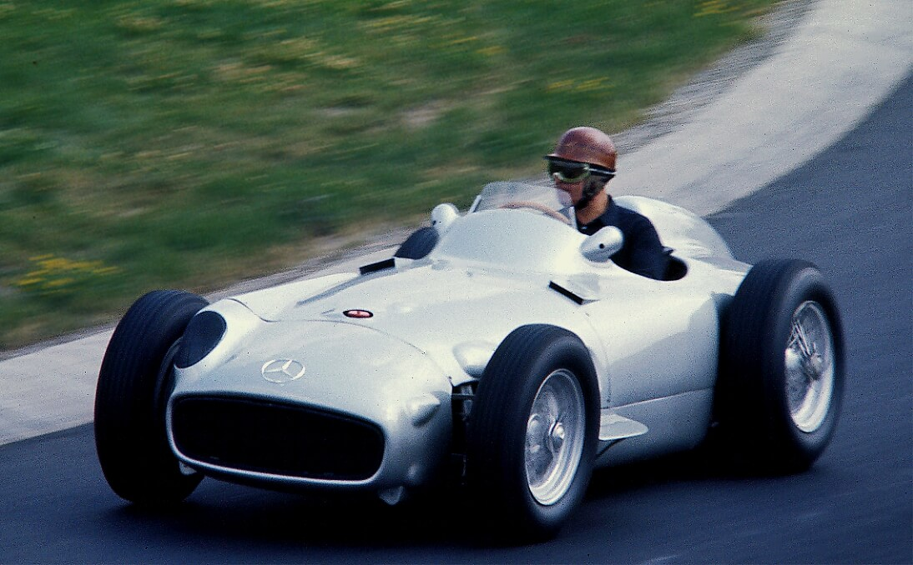02
Before 1950s : The First Grand Prix
Formula One evolved from the European Motor Racing Championships of the 1920s and 1930s. Prior to the official establishment of the Formula 1 World Championship in 1950, motor racing, including Grand Prix events, was flourishing in Europe. The Formula One regulations were agreed upon in 1946 and took effect in 1947.
In the early 1900s, motor racing gained traction across Europe, particularly in countries like France, Italy, and Germany. Grand Prix races, initially organized by automotive clubs, showcased leading manufacturers like Mercedes-Benz, Auto Union, Bugatti, and Alfa Romeo. The 1920s saw the rise of significant Grand Prix events, such as the French and Italian Grand Prix, drawing large audiences and global interest.
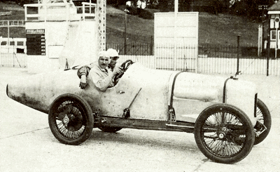Cars from this era were generally large and heavy, often equipped with superchargers for increased power. The 1930s marked the Golden Age of Grand Prix racing, with notable events like the Monaco, German, and Belgian Grand Prix becoming prominent. The European Grand Prix, rotating between different circuits, was a flagship event. Legendary drivers like Tazio Nuvolari, Rudolf Caracciola, and Achille Varzi became famous, showcasing remarkable skill and bravery. This period also saw technological innovations like independent suspension systems and streamlined bodywork to enhance performance.
Safety standards were low, with races held on demanding road circuits, posing significant risks to drivers and spectators. Sadly, many drivers from this era lost their lives in crashes. World War II halted Grand Prix racing in 1939, as resources were redirected to the war effort. Many circuits were repurposed for military use, and several key drivers and manufacturers were involved in the conflict.
The first Grand Prix under the new regulations was the 1946 Turin Grand Prix, preceding the formula's official start. Before WWII, proposals were made for a new championship to replace the European Championship, but the war delayed its implementation. The new International Formula was formalized in 1946, effective from 1947, and the World Championship began in 1950.
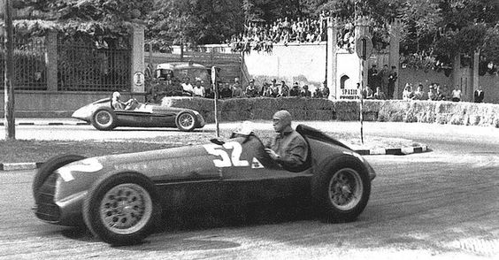03
1950s : Front-Engine Italian Glory
The 1950s were the inaugural decade of the Formula 1 World Championship, witnessing major advancements in technology, safety, and competition. Established by the Fédération Internationale de l'Automobile (FIA) in 1950, the initial season featured seven races, including iconic events like the British, Monaco, and Italian Grand Prix. Giuseppe Farina became the first Formula 1 World Champion, driving for Alfa Romeo.

Alfa Romeo and Ferrari were dominant forces in the early years, with powerful engines and skilled drivers. From 1950 to 1959, Alfa Romeo, Ferrari, and Maserati together won 7 Drivers' World Championships and led for 6 seasons, before Mercedes-Benz and British manufacturers like Vanwall and Cooper claimed the remaining titles of the decade.
The 1950s saw rapid technological progress, including advanced chassis designs, aerodynamic improvements, and more powerful engines. Supercharged engines were common early on, gradually being replaced by naturally aspirated engines. The 1958 season introduced the Constructors' Championship, acknowledging the manufacturers' contributions. Vanwall became the first team to win the Constructors' Championship in 1958 with the Vanwall VW5, though the Drivers' Championship went to Mike Hawthorn in the Ferrari 246 F1. The decade ended with Jack Brabham winning his first World Championship in 1959 with the Cooper team.
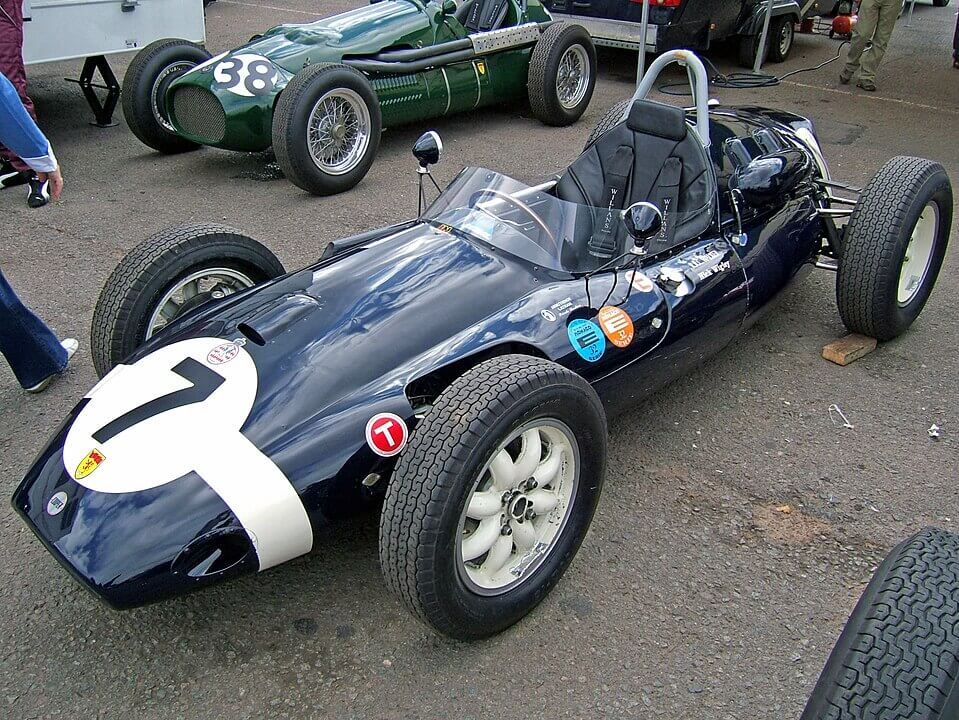04
1960s : First Technological Advancement
The 1960s was a transformative decade for Formula 1, featuring technological advancements, new teams and drivers, and significant regulatory changes. The decade started with the widespread adoption of rear-engine cars, a trend started by Cooper in 1959, helping Jack Brabham win his first title that year. By 1960, this layout became the norm due to its better weight distribution and handling. British teams like Lotus, BRM, and Cooper dominated the early 1960s.
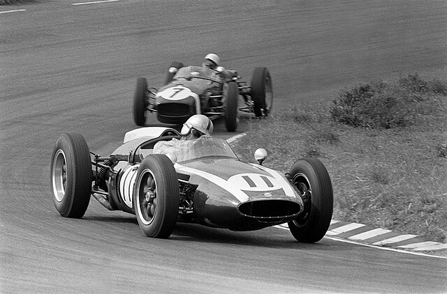Drivers such as Jim Clark, Graham Hill, Jack Brabham, Jackie Stewart and John Surtees became leading figures in this era. Lotus, led by Colin Chapman, introduced the monocoque chassis design with the Lotus 25 in 1962, significantly enhancing the car's rigidity and safety and setting a new standard for Formula 1 car design. Honda entered Formula 1 in the mid-1960s, bringing its expertise in engine technology from motorcycle racing. The Honda RA272, driven by Richie Ginther, secured the company's first Grand Prix victory in 1965 at the Mexican Grand Prix.
Teams began experimenting with aerodynamic elements, including wings and spoilers, to improve downforce and handling. In those years its quite often seeing a team with ridiculously high spoiler. These innovations laid the groundwork for the sophisticated aerodynamics seen in modern Formula 1 cars. However, in this era is considered one of the deadliest era of Formula 1 after 1950s era. The car is getting faster and more powerful but the safety standard is low both in car and in track with minimal run off area and high kerbing. One of the most tragic moment is the tragic loss of Jim Clark on 1968 Hockenheim Grand Prix during Formula 2 session in rain. Another notable crash is when Jackie Stewart crash at Belgium Grand Prix of Spa-Franchorchamp in 1966 also in rain condition which resulting him crash to telephone pole at approximately 165mph (266km/h) that shed his car, fortunately he survived those horiffic accident. These tragedies led to increased scrutiny of track safety and the introduction of regulations aimed at protecting drivers.
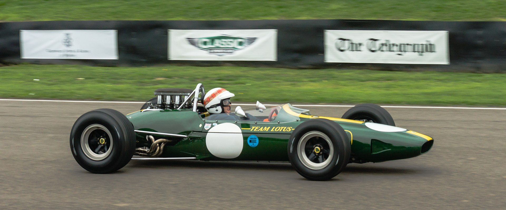The late 1960s saw the beginning of commercial sponsorship in Formula 1, with cars starting to feature advertising logos. This change significantly increased the financial resources available to teams, transforming the business model of the sport. The 1960s were a pivotal decade in Formula 1 history, characterized by significant technological advancements, the rise of new teams and drivers, and a growing awareness of safety issues. The innovations and changes during this period set the stage for the continued evolution of the sport in the following decades.
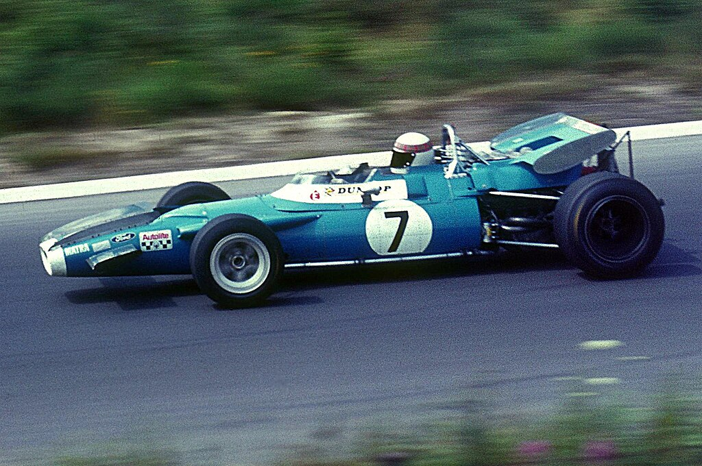05
1970s : Appearance of Formula 1 with Aero
The 1970s were a pivotal decade in Formula 1, marked by technological advancements, increased commercial involvement, and the emergence of new safety measures. Aerodynamics began to play a crucial role, with teams introducing wings and other aerodynamic devices to enhance downforce and improve cornering speeds.
Lotus, under the guidance of Colin Chapman, was a pioneer in aerodynamic innovation. The Lotus 72, introduced in 1970, featured an innovative wedge-shaped design and side-mounted radiators, becoming one of the most successful cars of the decade.
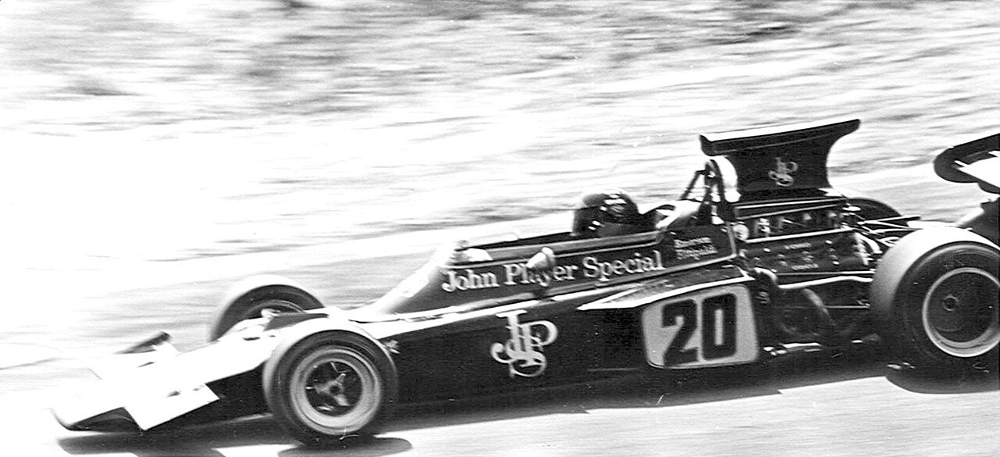Safety also became a significant focus following a series of fatal accidents. Drivers such as Jochen Rindt, who posthumously won the 1970 championship, Roger Williamson, and Francois Cevert who tragically died in 1973, highlighted the need for improved safety standards. The Grand Prix Drivers' Association (GPDA) pushed for safer circuits, better medical facilities, and stronger car construction.
The decade saw fierce competition between teams like Ferrari, McLaren, and Tyrrell. Niki Lauda, driving for Ferrari, became a dominant force, winning the World Championship in 1975 and 1977. His near-fatal crash in 1976 and miraculous recovery to challenge for the title highlighted the sport's dangers and the bravery of its drivers.
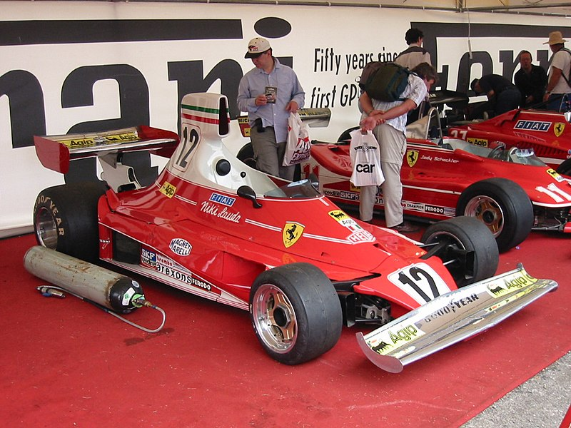Sponsorship and commercialism began to reshape Formula 1 in the 1970s. Teams secured lucrative deals with major corporations, leading to the now-familiar sight of cars adorned with prominent brand logos. Bernie Ecclestone, who took control of the commercial rights for the sport, played a crucial role in transforming Formula 1 into a global spectacle.
In those era, many team use a legendary engine of Ford Cosworth DFV that proven reliable, powerful, has greatest drivability and cheap. It's considered as one of the best engine ever used in Formula 1. It produced around 500HP naturally aspirated which is a lot for those era.
Towards the end of the decade, ground effect aerodynamics, pioneered by Lotus with the Lotus 79, revolutionized car design. This innovation used shaped underbodies to create significant downforce, allowing for higher cornering speeds and better handling.
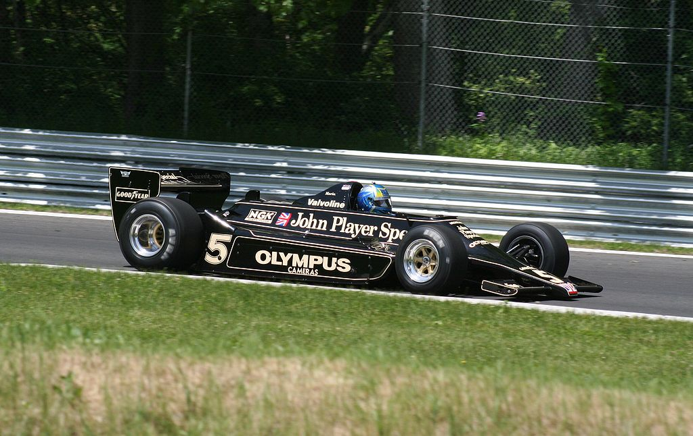Overall, the 1970s were a transformative period for Formula 1, setting the stage for the highly technical and commercially driven era that would follow in subsequent decades.
06
1980s : Turbocharged Madness
The 1980s in Formula 1 were defined by the rise of turbocharged engines. Renault pioneered this technology, and by mid-decade, most teams had adopted turbo engines, leading to unprecedented power outputs and higher speeds.
In those era is quite often formula 1 car got huge turbo lag because the turbo they are used is so big. In the peak turbo era, in qualifying trim Formula 1 car could reach horsepower up to 1200HP that only lasted for 3 laps. In 1986, Benetton B186 got BMW engine named M12/M13 that could produce 1400HP with over 5 Bar of turbo boost.
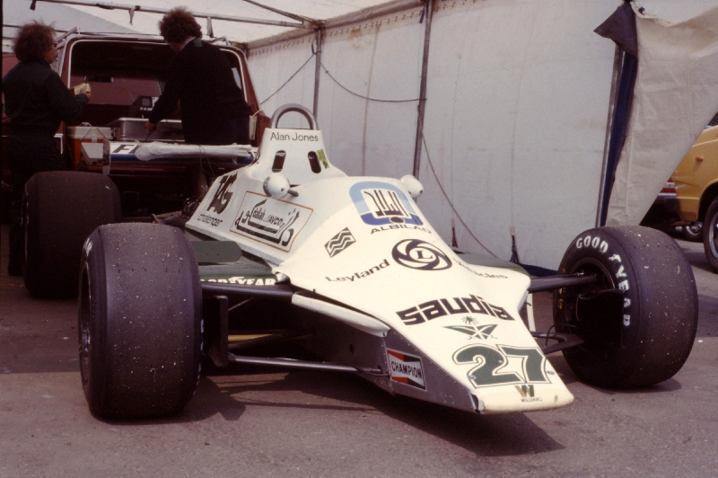McLaren, Williams, and Ferrari emerged as the dominant teams. Niki Lauda and Alain Prost helped McLaren dominate the mid-1980s with the MP4/2, which won three drivers' championships (1984-1986) and two constructors' titles (1984-1985).
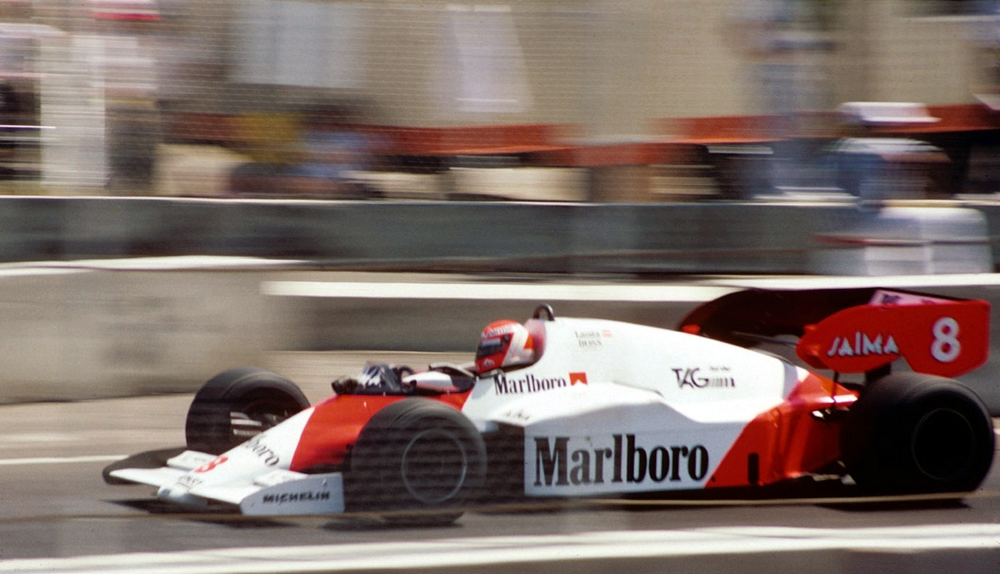The rivalry between Ayrton Senna and Alain Prost began in the late 1980s when they were teammates at McLaren, culminating in dramatic clashes in 1989 Japanese Grand Prix and 1990 Japanese Grand Prix. Senna won his first championship in 1988 driving the McLaren MP4/4.
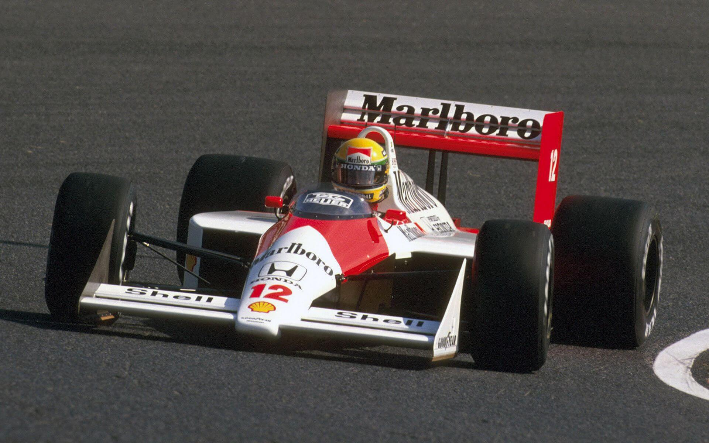Ground effect technology, introduced in the late 1970s, was further developed in the early 1980s. However, safety concerns led to the ban of ground effect cars in 1983. The decade ended with a shift towards naturally aspirated engines, banning turbo engines after the 1988 season.
07
1990s : Electronic advancement in Formula 1
The 1990s were a decade of significant technological advancements in Formula 1. Electronic driver aids such as traction control, semi-automatic gearboxes, and active suspension systems became standard, improving car performance and handling. In those era Formula 1 car use naturally aspirated engine of V10, V8 and V12 before eventually at late 1990s all teams using V10 engine because it has big power like V12 but as light as V8 engine.
Williams, under Adrian Newey's technical leadership, dominated the early 1990s with innovations like the active suspension in the FW14B. Nigel Mansell and Alain Prost won championships with Williams in 1992 and 1993, respectively.
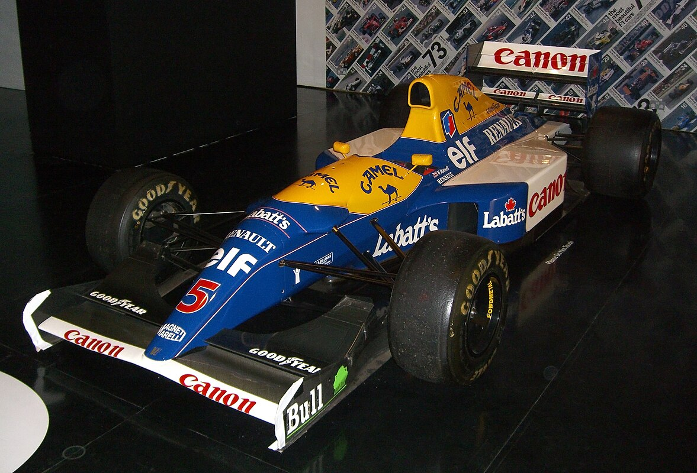In this era we introduced by a young prodigy of Michael Schumacher emerged as a major talent, winning back-to-back titles with Benetton in 1994 and 1995. His move to Ferrari in 1996 set the stage for their dominance in the early 2000s.
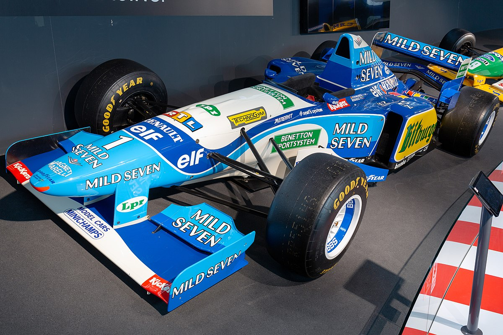The tragic deaths of Ayrton Senna and Roland Ratzenberger at the 1994 San Marino Grand Prix led to significant safety improvements. The FIA introduced stricter regulations on car design, circuit safety, and driver protection. It considered as one of the darkest day of Formula 1 after a long year of no fatality in those era.
By the end of the decade, McLaren and Ferrari had returned to the forefront of Formula 1 with new regulations introduced at 1998 season. Notably Mika Hakkinen who won 1998 and 1999 Driver's title. Schumacher won multiple races, setting the stage for the team's dominance in the early 2000s.

08
2000s : Bring back those V10 and V8!
The 2000s were marked by Ferrari's dominance, with Michael Schumacher winning five consecutive drivers' titles from 2000 to 2004. The Ferrari F2002 and F2004 were particularly dominant, showcasing the team's technical superiority and Schumacher's skill. With V10 engine era that become the most iconic Formula 1 engine of all time with distinctive loud sound and incredible power.
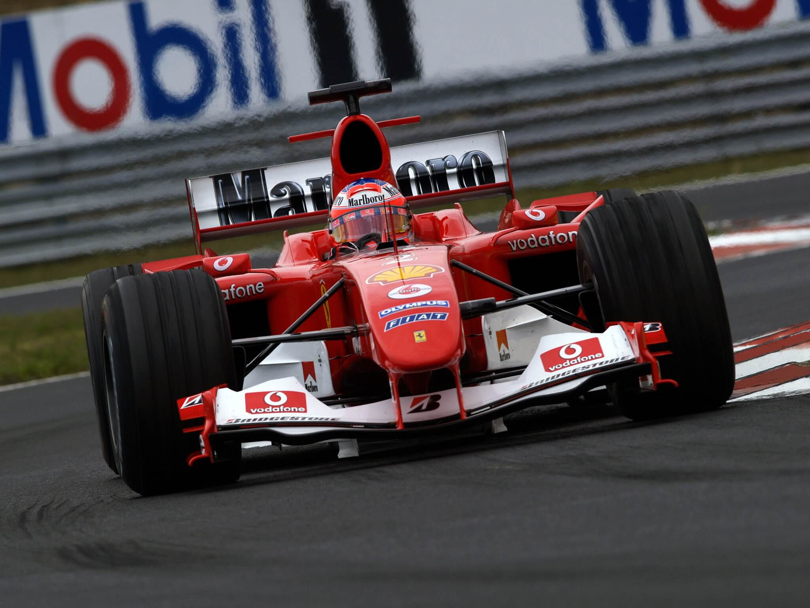The early 2000s also saw the continuation of the rivalry between Ferrari and McLaren in the likes of Michael Schumacher and Mika Hakkinen in year 2000. Teams like Williams, McLaren and Renault constantly giving Ferrari the competition throughout the 2000 to 2004 before eventualy Ferrari dominance broke by Renault led by Fernando Alonso by winning the drivers' and constructors' championships in 2005 and 2006.
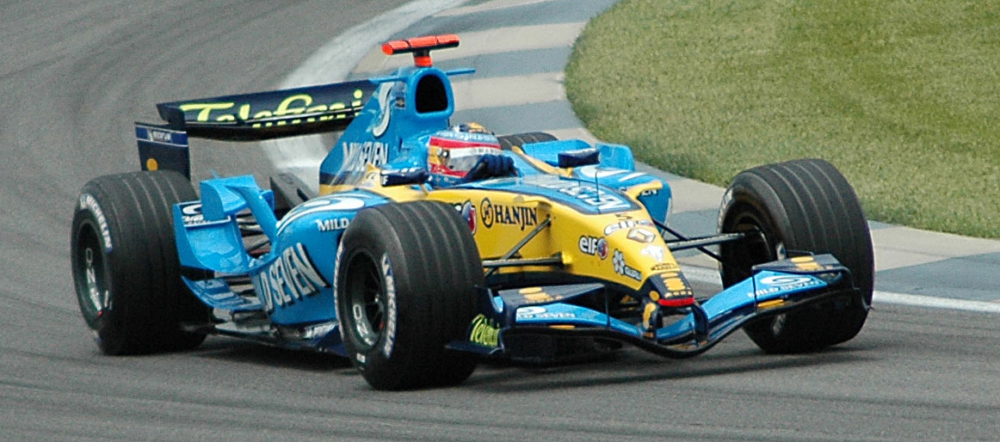The decade witnessed significant changes in regulations aimed at improving safety and reducing costs. The introduction of V10 and later V8 engines, along with aerodynamic restrictions and banning of traction control, aimed to curb increasing speeds and make the sport more competitive than before.
The late of 2000s also saw the rise of Lewis Hamilton, who won his first championship with McLaren in 2008. His victory marked the beginning of a new era, with Hamilton set to become one of the most successful drivers in F1 history in the later years.
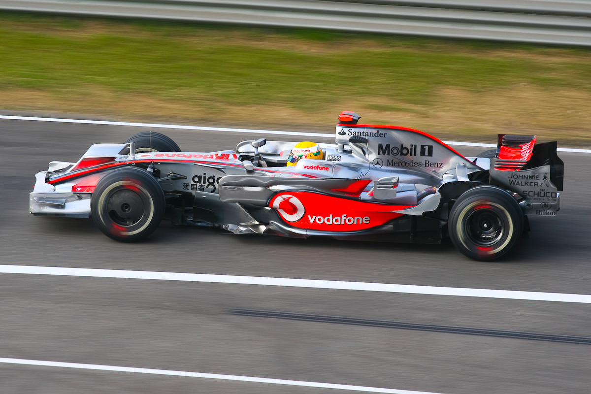And in the final year of this era, FIA brought the new rules with introduction of slick tyres, lower and wider front wings, and skinner but taller rear wings. Brawn GP, a rebranded Honda team from 2008 become the shock of the world by winning the constructor and driver championship with the help of Jenson Button and Rubens Barichello.
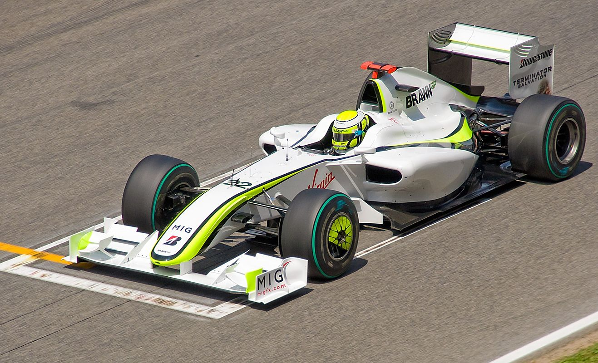09
2010s : Hybrid engine era
The 2010s introduced the hybrid engine era, bringing significant technological changes to Formula 1. The new power units combined internal combustion engines with electric motors, emphasizing efficiency and sustainability.
Red Bull Racing, with Sebastian Vettel, dominated the early part of the decade, winning four consecutive championships from 2010 to 2013. Adrian Newey's innovative car designs played a crucial role in Red Bull's success. In 2012 we saw the greatest championship battle of F1 history involving Sebastian Vettel, Fernando Alonso in Ferrari, Lewis Hamilton and Jenson Button in Mercedes. Also the comeback of legendary driver of Michael Schumacher at Mercedes and Kimi Raikkonen at Lotus after short hiatus.
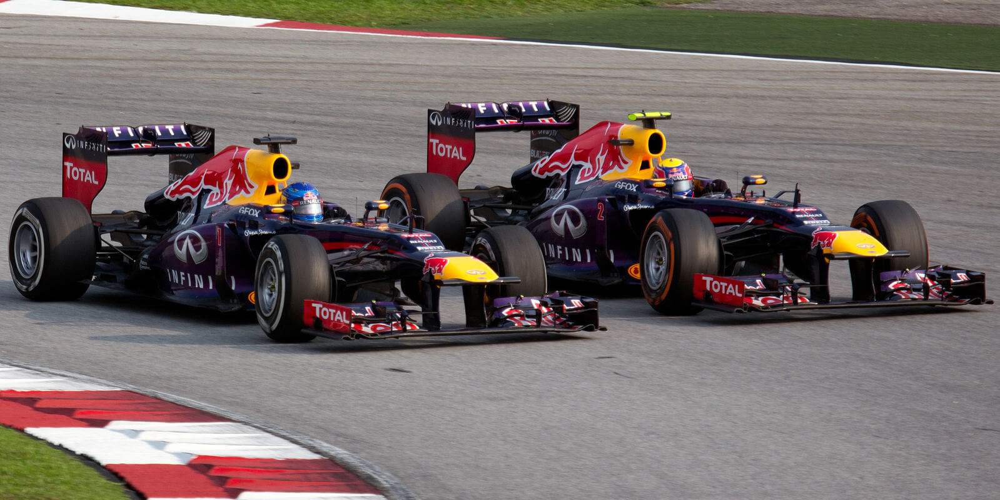The introduction of hybrid power units in 2014 marked a new era, with Mercedes becoming the dominant force. Lewis Hamilton and Nico Rosberg led the team to multiple championships, with Hamilton winning six titles during the decade with mercedes. At this era we saw an enormous amount of talent in the grid the likes of Daniel Ricciardo, Young days of Max Verstappen debuting at 17 years old at 2015, Sebastian Vettel in Ferrari and Charles Leclerc in the 2018.
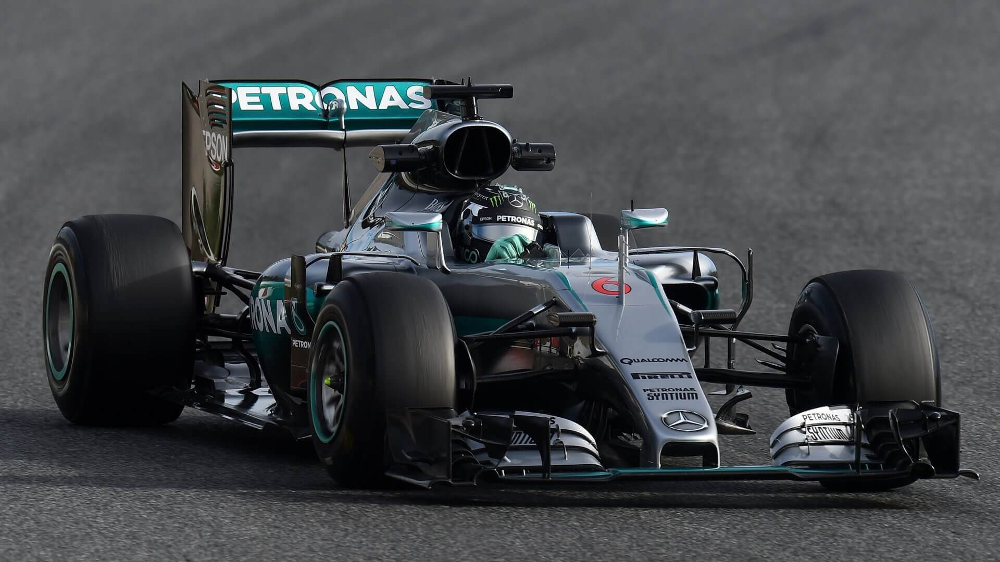In the 2017, a revised rule making the Formula 1 car has wider and longer body resulting the significant improvement of downforce making the F1 car become pretty quick again after the first introduction of hybrid era in 2014.
The 2010s also saw increased efforts to improve safety, with the introduction of the halo device following the tragic demise of Jules Bianchi at 2014 Japanese Grand Prix. Halo device introduced in 2018 to protect drivers' heads from debris and impacts. The decade was characterized by fierce competition, advanced technology, and a push towards more sustainable racing.
In this era also face a new problem with bigger, longer and heavier car from 2017 to 2021 making the overtaking difficult unless using DRS. However the car is getting incredibly quick with the Mercedes, Ferrari and RedBull become the top trio of 2014 to 2019 era.
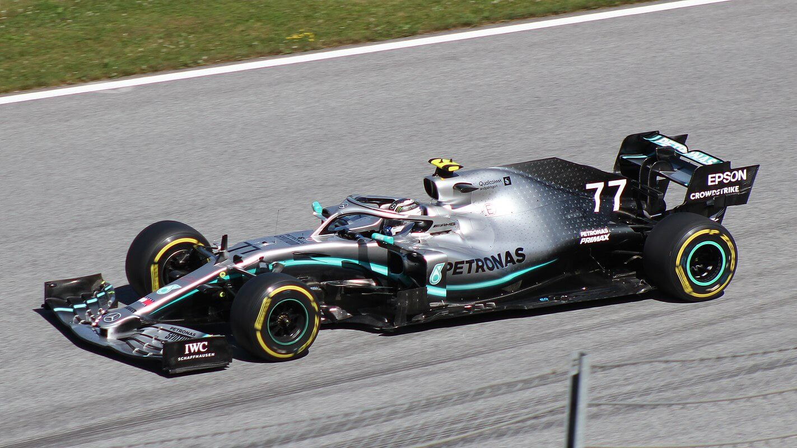10
2020s : Fastest F1 Car and Ground-effect comeback
The 2020s have seen the continuation of hybrid technology, with a focus on sustainability and efficiency. Mercedes continued to dominate, with Lewis Hamilton matching Michael Schumacher's record of seven world titles in 2020. Lewis Hamilton untouchable in 2020 driving Mercedes W11 with his incredible skill to clinch his seven world title. With enormous amount of downforce, superior engine, great realibility make it the fastest Formula 1 car ever made.
The COVID-19 pandemic affected the 2020 season, leading to a revised calendar and races held without spectators. Despite the challenges, the season was highly competitive, with new talents like Max Verstappen and Charles Leclerc emerging as future champions.
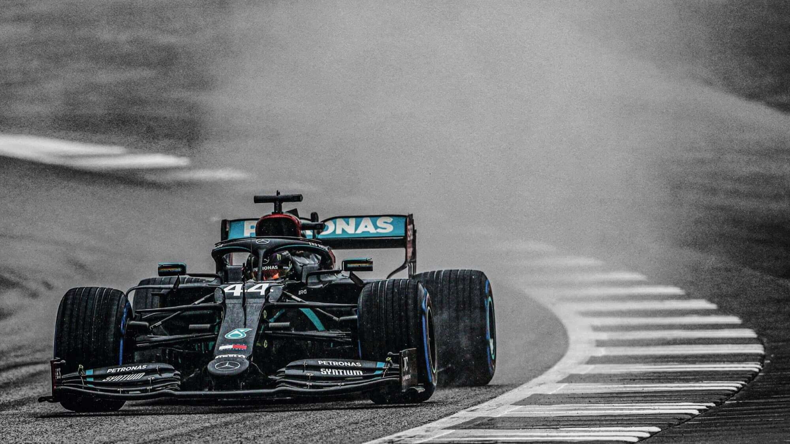The new technical regulations introduced in 2022 aimed to reduce aerodynamic turbulence and promote closer racing. These changes saw a return to ground-effect aerodynamics, a concept last used in the early 1980s.
Red Bull Racing, with Max Verstappen, has emerged as a strong contender, winning multiple races and challenging Mercedes' dominance. The 2020s have brought renewed excitement and competition to Formula 1, with a focus on innovation and sustainability.
In 2021 we saw one the greatest Formula 1 season ever in terms of championship battle with Max Verstappen in RedBull RB16B against defendant of Lewis Hamilton in Mercedes W12. The title battle was so iconic and decided at controversial 2021 Abu Dhabi Grand Prix at the last lap of the race with Max Verstappen emerging as victor of 2021 season, ending the dominance of Mercedes in Hybrid era.
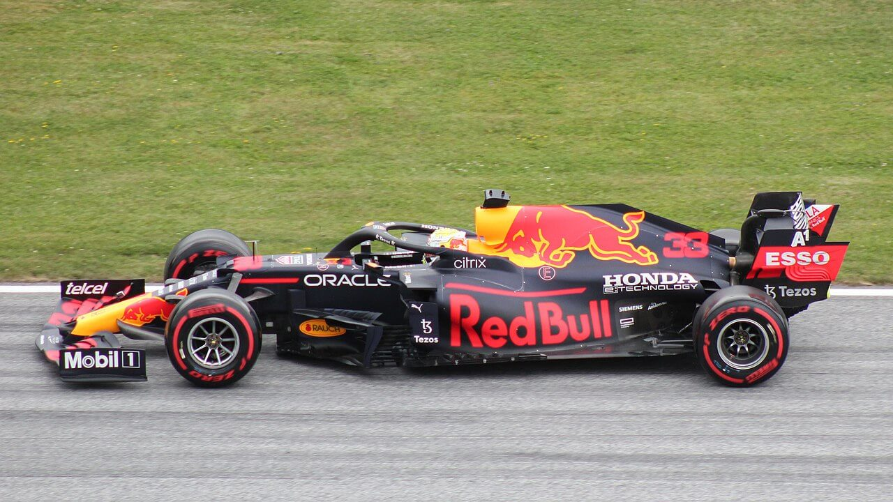In 2022, RedBull proves their dominance in ground-effect era. With Adrian Newey and the team create a masterpiece of grund effect car by winning the driver's title and constructors championship with Max Verstappen and Sergio Perez. The 2022 F1 car have distinctive characterictic of very curved rear wings and wider rims. In 2023 we saw probably the most dominant season ever with RedBull in their almighty RedBull RB19 win every race except one in singapore. Max Verstappen become the three time world champion breaking every record available for a season.
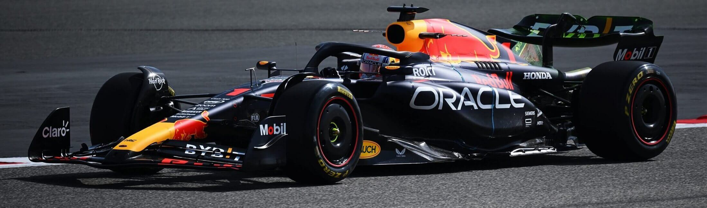But in 2022-2023 era facing difficult problem such as heavier car and taller car making driving it difficult, especially at street circuit the likes of Monaco that has very tight and technical corner. Also the ground effect car create an enormous amount of spray when raining, making the visibility of driver behind it even more obscured.
Currently we on 2024 season with as now, RedBull of Max Verstappen the driver championship. But the emergence of McLaren continuing their momentum after big upgrade in the mid 2023 and Ferrari making the constructor battle tighter than ever. Well, the 2024 saw the most competitive grid ever with position 1 to 20 in the qualifying often has covered by only one second. Let's see who is emerging victorius!